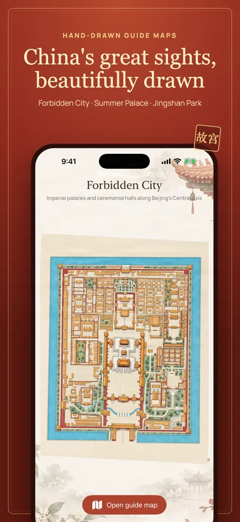
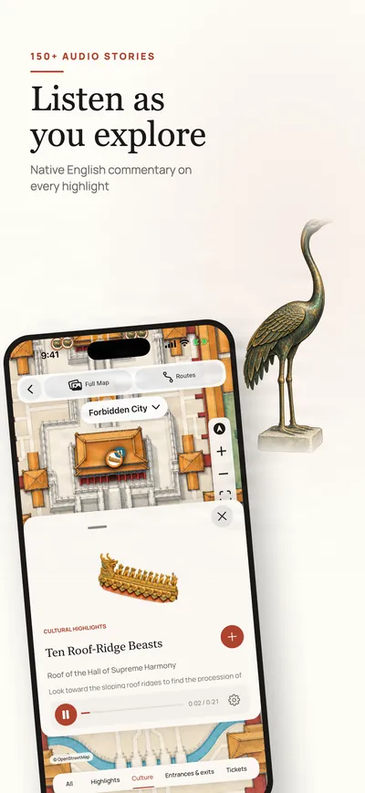
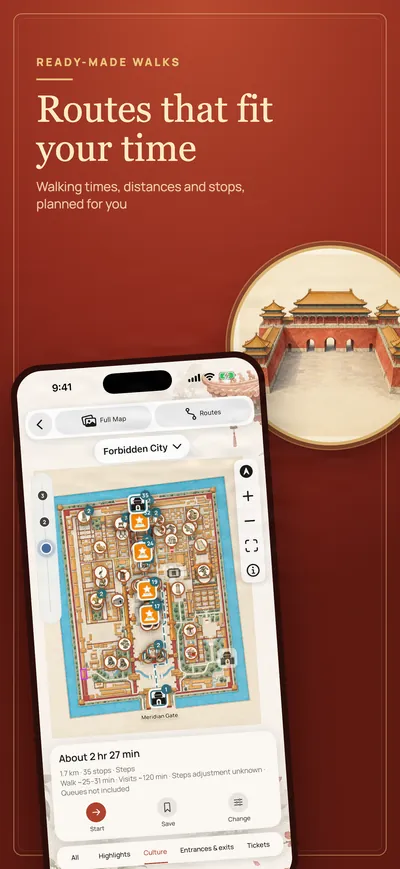

Press
Penyola press kit
Penyola is an offline iPhone guide to Beijing's Forbidden City, Summer Palace and Jingshan Park, with hand-drawn maps, audio stories and walking routes.
Penyola is made for international visitors who want to understand what they are looking at. Each site has its own hand-drawn map: tap a hall, gate, tree or carved beast to read its story or hear it narrated in English. Suggested walks give times and stops, and the visitor information (hours, tickets, entrances and a Chinese address card for taxis) is in the same place.
Everything is stored on the phone, so the guide works with no signal, no roaming plan and no VPN. There is no account, no sign-in and no advertising, and the app collects no data. The maps and the illustrations of buildings and relics are drawn for Penyola.
Penyola is free to download, and the Jingshan Park guide is free and complete. One in-app purchase of US$6.99, Unlock All Guides, unlocks the Forbidden City and the Summer Palace and every guide added later, with no subscription. Penyola launched on 6 November 2026, in English, for iPhone, on the App Store in every region except mainland China, Hong Kong and Taiwan.
Key facts
- 3 guides: Jingshan Park (free), the Forbidden City, the Summer Palace
- 129 illustrated highlights
- 150+ audio stories in English
- Offline everything is on the phone
- US$6.99 one time for every guide, no subscription
- No data collected: no account, no ads, no analytics in the app
Images



These images and the illustrations on the home page may be used in coverage of Penyola. Larger files on request.
Links and contact
- App Store: apps.apple.com/app/id6821783513
- Free Jingshan Park guide in the browser: penyola.com/demo.html
- Press and partnerships: penyola.support_2378@icloud.com